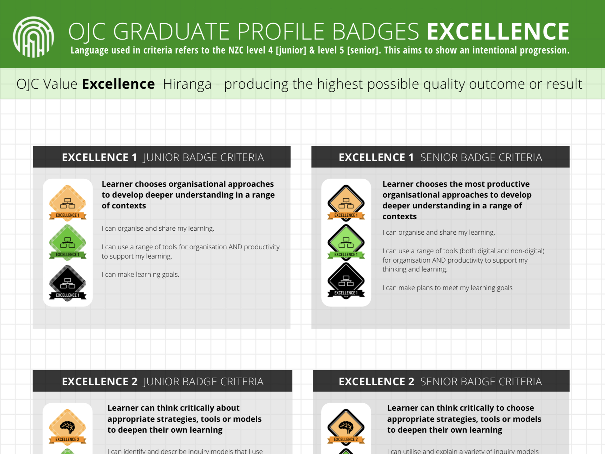
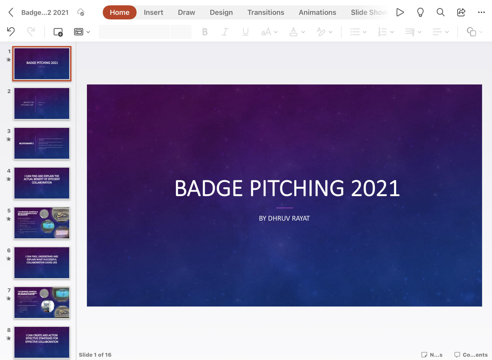

Contact
Contact
Contact
Contact
This should teach you the basics of creating a Badge Pitch
During this step you decide what badges you're gonna pitch for, you'll need to pitch 3 Badges per term, you base the badges you pitch for on what you did that term. For example if you worked more in the arts you would probably pitch for Innovation 2, Inspiration 1 etc. If I worked more in Technology, I would probably pitch for Innovation 4, Innovation 1 etc etc
Now we get to the fun part, making the Pitch. When you get to this part you cultivate all the Evidence and put it into a slideshow, an Infographic, basically anyway you want to present it. Though most people end up using a slideshow since it is a bit easier and more straight forward to use. Refer to the page All-Badges page on what evidence could be used
During this Step you pitch the Badge to any Learning Coach you prefer Please refer to the Pitching Badges Page